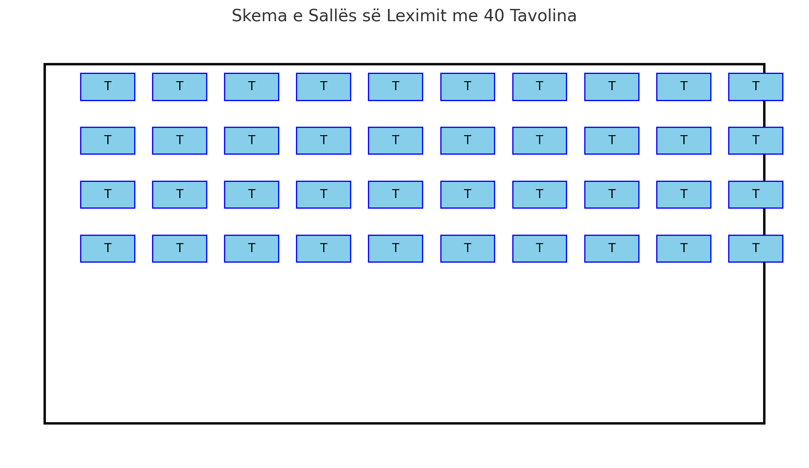
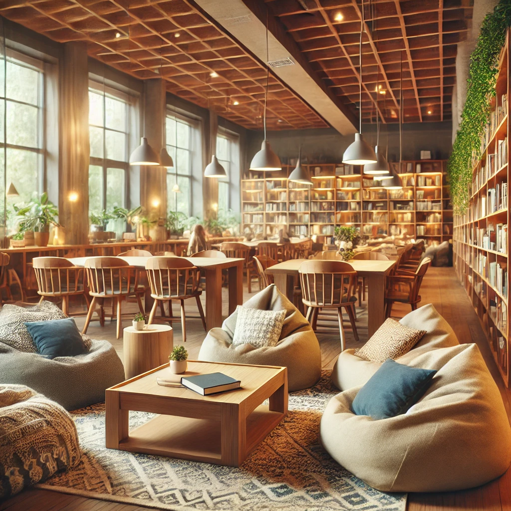
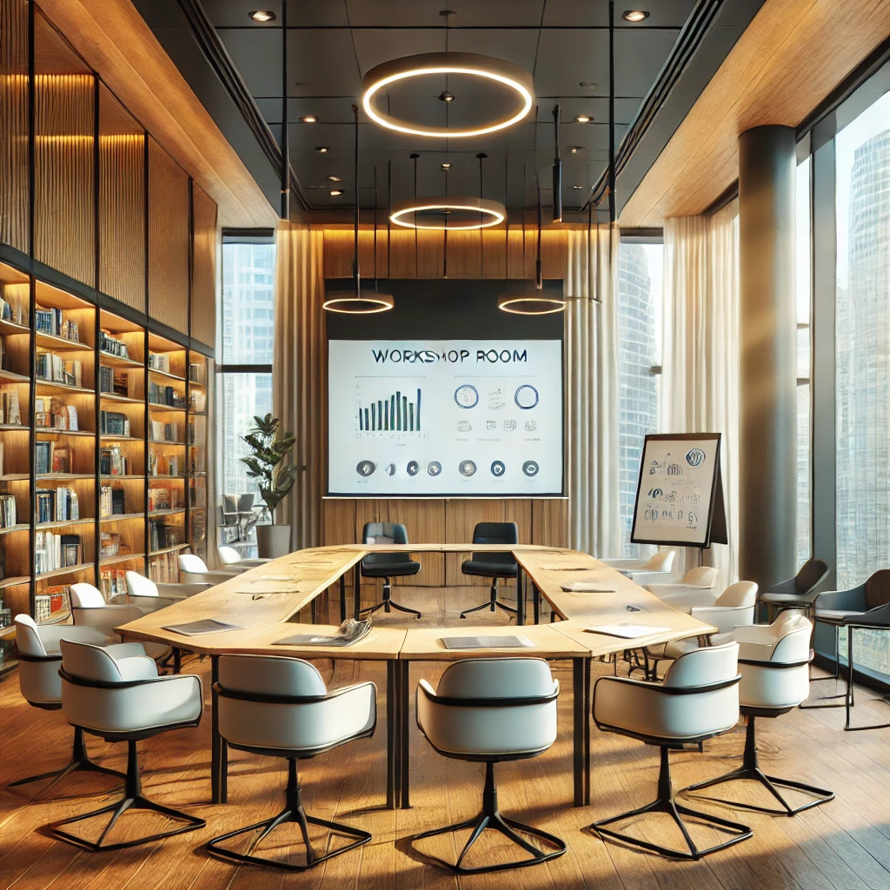
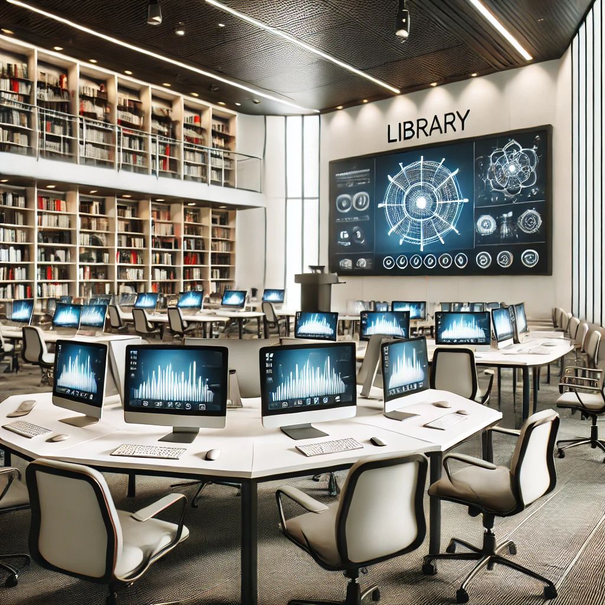
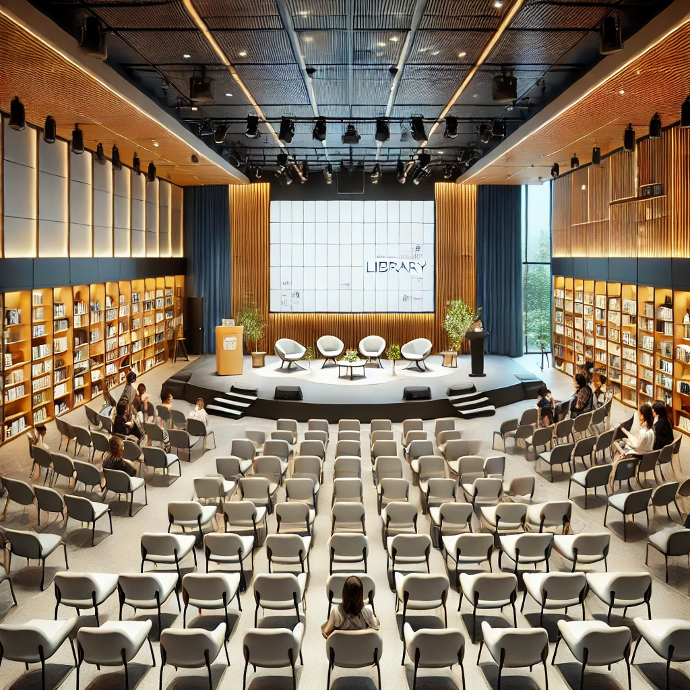

Salla e Leximit është një hapësirë moderne dhe e rehatshme, e dizajnuar për të ofruar një ambient ideal për përqendrim dhe studim. Kjo sallë është e ndarë në disa seksione për të përmbushur nevojat e ndryshme të lexuesve: Hapësira Kryesore e Leximit Përfshin 40 tavolina individuale, të pajisura me llamba leximi dhe prizë për laptop ose pajisje të tjera elektronike. Tavolinat janë të ndara nga ndarëse për të siguruar privatësi dhe qetësi maksimale. Dritaret e mëdha ofrojnë ndriçim natyral gjatë ditës, duke krijuar një atmosferë të ndriçuar dhe të qetë.
Dhoma e studimit në grup është një hapësirë moderne dhe e mirëorganizuar, e përshtatur për bashkëpunim dhe kreativitet. Ajo përfshin: Tavolina të veçanta për grupe të vogla. Karrige ergonomike për rehati maksimale. Tabela të bardha dhe zona për prezantime. Dekor minimalist me ndriçim të bollshëm, libra dhe bimë për një atmosferë të ngrohtë dhe frymëzuese.
Kjo sallë është e dizajnuar për bashkëpunim dhe sesione produktive, duke përfshirë: Një tavolinë të madhe qendrore për grupe të mëdha. Karrige moderne dhe komode për pjesëmarrësit. Një ekran projektori dhe një tabelë të bardhë për prezantime dhe brainstorming. Ndriçim të bollshëm nga dritaret e mëdha dhe elemente dekorative minimaliste si rafte me libra dhe bimë.
Përshkrimi i Sallës Multimediale Salla Multimediale është një hapësirë e pajisur me teknologji të avancuar, duke përfshirë: Rreshta me kompjuterë për kërkime, mësime online dhe projekte dixhitale. Një ekran projektori të madh për prezantime dhe leksione. Karrige ergonomike për rehati të gjatë. Pajisje audio-vizuale për evente dhe shfaqje interaktive. Ndriçim modern dhe rafte me libra për burime shtesë. Kjo sallë është krijuar për të përmirësuar përvojën e të mësuarit dhe bashkëpunimit.
Salla e Eventeve në bibliotekë është krijuar për aktivitete të ndryshme si prezantime, takime me autorë, dhe mbledhje komunitare. Ajo përfshin: Një skenë të vogël me podium për folësit. Rreshta me karrige të vendosura në stil auditoriumi. Një ekran projektori dhe pajisje audio për shfaqje dhe prezantime. Dekor modern me rafte librash dhe panele akustike për cilësi më të mirë të zërit.
